第三章 过程性语句和例程
当您验证您的设计时，您需要编写大量的代码，其中大部分是任务和函数。SystemVerilog引入了许多增量改进，使语言看起来更像C语言，特别是在参数传递方面，从而使这一点变得更容易。如果你有软件工程的背景，这些补充应该是非常熟悉的。
3.1 程序语句
SystemVerilog从C和c++中采用了许多操作符和语句。您可以在for循环中声明一个循环变量，从而限制循环变量的范围，并可以防止一些编码错误。新的自动自增++和自动自减−−操作符有前置和后置两种形式。复合赋值，+=，−=，ˆ=，以及更多使你的代码更紧凑。如果在begin或fork语句中有标签，则可以在匹配的end或join语句中放置相同的标签。这使得匹配块的开始和结束变得更容易。您还可以在其他SystemVerilog结束语句上添加标签，例如endmodule、end- task、endfunction以及您将在本书中学习的其他语句。样例3.1 demon-演示了一些新的构造。
样例3.1新的过程语句和运算符
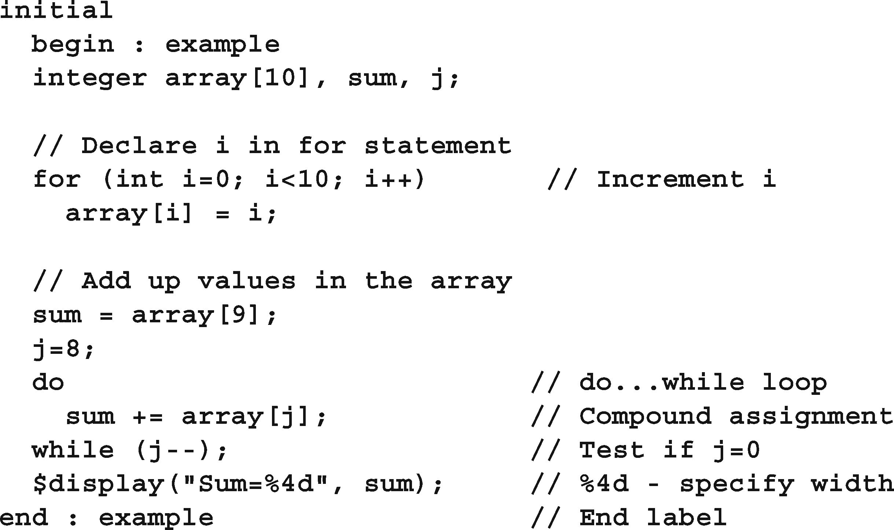
两个新语句帮助处理循环。首先，如果您处于循环中，但希望跳过其余语句并执行下一次迭代，请使用continue。如果你想立即离开这个循环，使用break。
Sample 3.1中的复合赋值等价于sum = sum + array[j];示例3.2中的循环使用Verilog-2001中的文件I/O系统任务从文件读取命令。如果命令只是空行，则代码执行continue，跳过命令的任何进一步处理。如果命令“完成”，则代码执行断点以终止循环。
例3.2在读取文件时使用break和continue
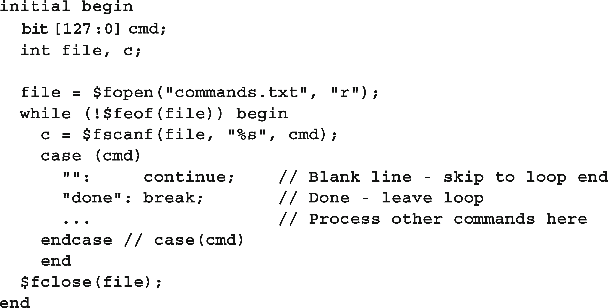
SystemVerilog展开case语句，这样您就不再需要给出每个可能的值，而是可以给出一个范围值，如示例3.3所示。这是inside操作符的一个版本，在6.4.5节中有更详细的介绍。
带有范围的Case-inside语句
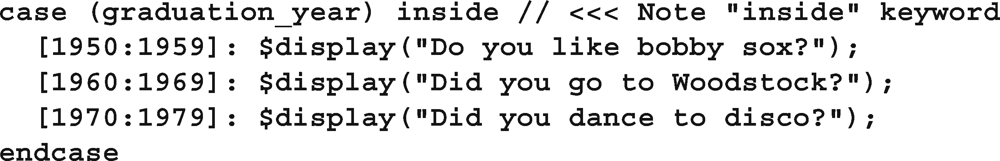
3.2 任务、函数和Void函数
Verilog对任务和功能进行了非常明确的区分。最重要的区别是任务可以消耗时间，而函数不能。一个函数不能有一个延迟，#100，一个阻塞语句，比如@(posedge clock)或者wait (ready)，或者调用一个任务。此外，Verilog函数必须返回一个值，并且必须使用这个值，就像在赋值语句中一样。
SystemVerilog稍微放宽了这一规则，因为函数可以调用任务，但只能在fork…join_none语句衍生的线程中调用，这在7.1节中描述。
如果您有一个不消耗时间的SystemVerilog任务，则应该将其设置为void函数，这是一个不返回值的函数。现在可以从任何任务或函数调用它。为了获得最大的灵活性，任何调试例程都应该是空函数而不是任务，以便可以从任何任务或函数调用它。样例3.4打印来自状态机的值。
用于调试的样例3.4 Void函数
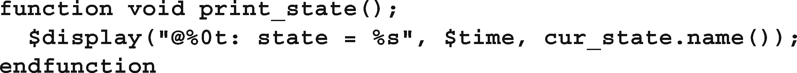
在SystemVerilog中，如果您想调用一个函数并忽略它的返回值，请将结果转换为void，如示例3.5所示。有些模拟器，比如VCS，允许您忽略返回值而不使用void语法。LRM说这应该是一个警告。
示例3.5忽略函数的返回值
3.3 任务与功能概述
SystemVerilog对任务和函数做了一些小小的改进，使它们看起来更像C或c++例程。通常，没有参数的例程定义或调用不需要空圆括号()。为了更清晰，本书包括了它们。
- 例程开始…结束删除
在SystemVerilog例程中，您可能注意到的第一个改进是begin…end块是可选的，而Verilog-1995在除单行例程外的所有例程中都要求使用它们。task / endtask和function / endfunction关键字足以定义例程边界，如示例3.6所示。
示例3.6没有begin…end的简单任务
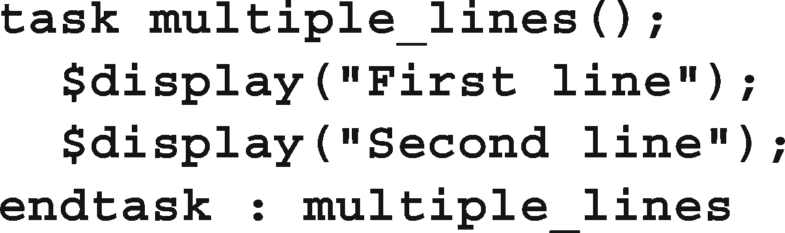
3.4 常规参数
SystemVerilog对例程的许多改进使得声明参数和扩展向例程传递值和从例程传递值的方式变得更加容易。
3.4.1 c风格的常规参数
SystemVerilog和Verilog-2001允许您更清晰地声明任务和函数参数，减少重复。下面的Verilog任务要求您声明两个参数:一个是方向，一个是类型，如样例3.7所示。
示例3.7 Verilog-1995例程参数
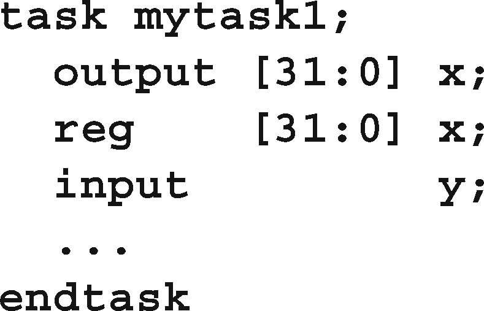
使用SystemVerilog，您可以使用更简洁的c风格，如示例3.8所示。
请注意，您应该使用通用输入类型的逻辑。
样例3.8 c风格例程参数
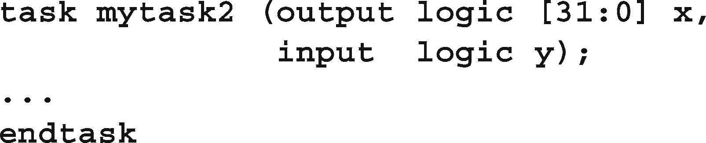
3.4.2 论证方向
您可以使用声明例程参数的更多快捷方式。方向和类型默认为“input logic”，并且是粘性的，所以对于类似的参数，您不必重复这些。样例3.9显示了使用Verilog-1995风格和SystemVerilog数据类型编写的例程头。
示例3.9详细verilog风格的例程参数
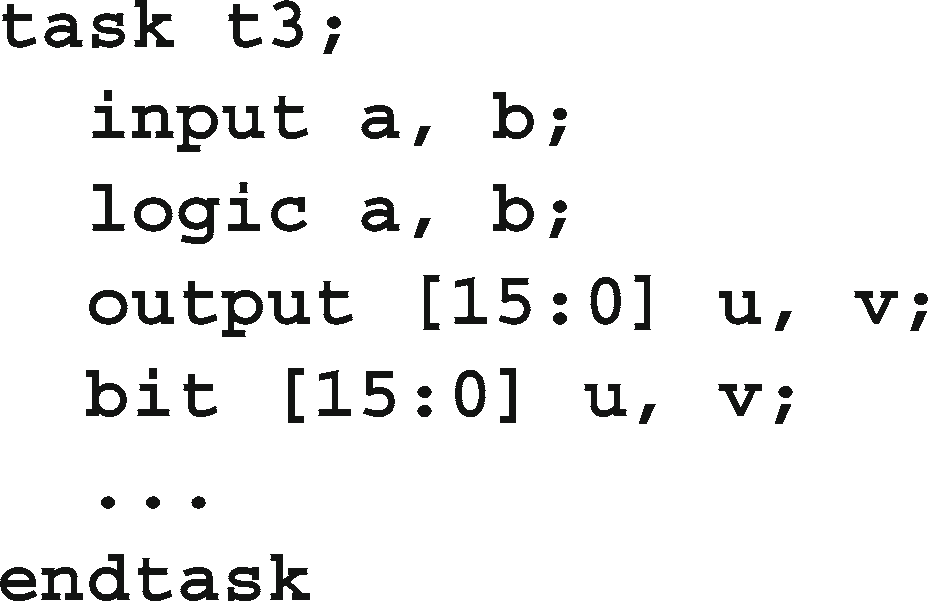
您可以将其重写为示例3.10所示。
带有粘性类型的例程参数示例3.10
参数a和b是输入逻辑，1位宽。参数u和v是16位的输出位类型。既然您已经知道了这一点，那么就不要依赖于默认值，因为您的代码将充斥着微妙且难以发现的bug，正如3.4.6节中所解释的那样。总是为每个例程参数声明类型和方向。
3.4.3 先进的参数类型
Verilog有一种简单的方法来处理参数:在例程开始时将输入或inout复制到局部变量，而在例程退出时复制输出或inout。不能将内存传递到Verilog例程中，只能传递标量。
在SystemVerilog中，可以指定通过引用传递参数，而不是复制其值。相对于input、output和inout, ref参数类型有几个优点。首先，您现在可以将数组传递到例程中，这里的例程打印校验和。
示例3.11使用ref和const传递数组
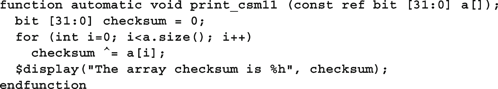
示例3.11中的=复合赋值是编写语句的一种简写方式:
SystemVerilog允许您在不使用ref方向的情况下传递数组参数，但是数组被复制到堆栈上，这对于除了最小的数组之外的所有数组都是一个昂贵的操作。
SystemVerilog LRM声明，ref参数只能在具有自动存储功能的例程中使用。如果您为程序和模块指定了automatic属性，那么里面的所有例程都是自动的。有关存储的更多细节，请参见3.6节。
样例3.11还展示了const修饰符。结果，数组a指向例程调用中的数组，但数组的内容不能被修改。如果尝试更改内容，编译器将打印一个错误。
为获得最佳性能，在将数组传递给例程时始终使用ref。如果不希望例程改变数组值，则使用const ref类型，这将导致编译器检查例程是否没有修改数组。
ref参数的第二个好处是，任务可以修改变量，并立即被调用函数看到。当您有几个线程同时执行，并且希望用一种简单的方式传递信息时，这是很有用的。关于使用fork-join的更多细节，请参见第7章。
在样例3.12中，只要断言启用，初始块中的thread2块就可以从内存中访问数据，即使bus_read任务直到总线事务完成才返回，这可能需要几个周期之后。
示例3.12在线程间使用ref
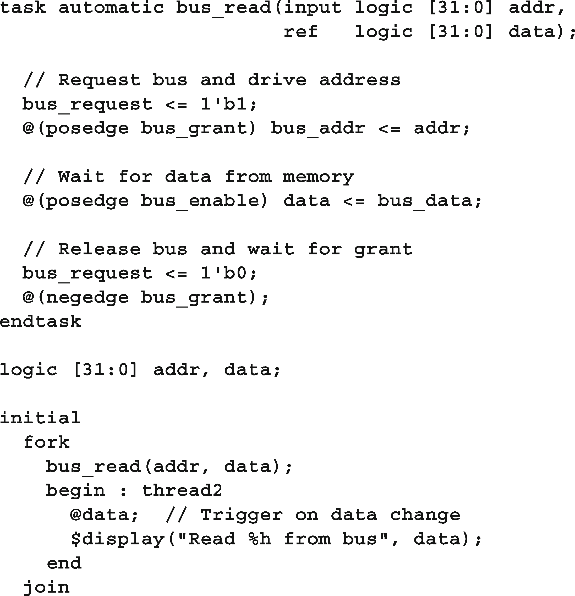
data参数作为ref传递，因此，一旦任务中的数据发生变化，@data语句就会触发。如果已将数据声明为输出，则@data语句直到总线事务结束时才会触发。
3.4.4 参数的默认值
随着您的测试平台越来越复杂，您可能想要添加额外的控制到您的代码，但不破坏现有的代码。对于样例3.11中的函数，您可能想打印数组中间值的校验和。但是，您不希望返回并重写每个调用来添加额外的参数。在SystemVerilog中，如果在调用中省略了参数，可以指定一个默认值。样例3.13向print_csm函数添加了low和high参数，这样您就可以打印一系列值的校验和。
带有默认实参值的示例3.13函数
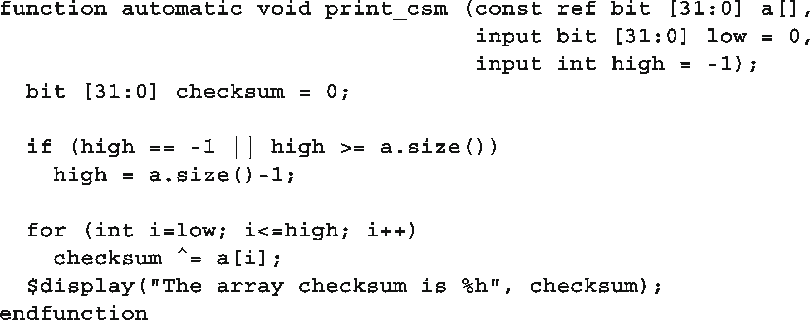
您可以通过以下方式调用这个函数，如示例3.14所示。注意，第一个调用与print_csm例程的两个版本兼容。
示例3.14使用默认实参值
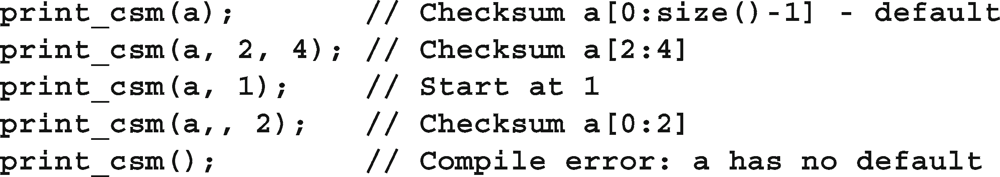
使用缺省值−1(或任何超出范围的值)是查看调用是否指定了一个值的好方法。
在开始循环之前，Verilog for循环总是执行初始化(int i=low)和测试(i<=high)。因此，如果您不小心传递了一个大于high或数组大小的低值，那么for循环将永远不会执行body。
3.4.5 按名称传递参数
您可能已经在SystemVerilog LRM中注意到，任务或函数的参数有时称为“端口”，就像模块的连接一样。如果您有一个带有许多参数(有些参数带有默认值)的任务或函数，并且您只想设置其中的一些参数，那么您可以通过使用类似于端口的语法指定例程参数的名称来指定一个子集，如示例3.15所示。
样例3.15按名称绑定参数
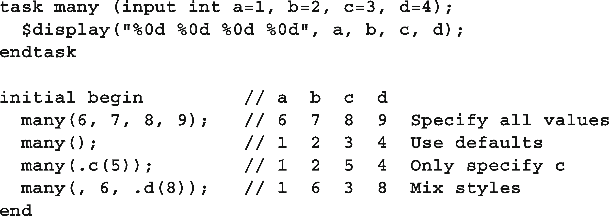
3.4.6 常见的编码错误
 对于例程，最常见的编码错误是忘记参数类型与前一个参数相比是粘性的，并且第一个参数的默认类型是单位输入。从示例3.16中的简单任务头开始。
对于例程，最常见的编码错误是忘记参数类型与前一个参数相比是粘性的，并且第一个参数的默认类型是单位输入。从示例3.16中的简单任务头开始。
样例3.16原始任务标题
这两个参数是输入整数。在编写任务时，您意识到需要访问一个数组，因此添加了一个新的数组参数，并使用ref类型，这样它就不必被复制。例程头现在看起来像样例3.17。
样例3.17带有附加数组参数的任务头
a和b的参数类型是什么?它们采用前一个参数的方向，即ref。通常不需要对简单变量(如int)使用ref，但编译器甚至不会发出警告，因此不会意识到你使用了错误的方向。
如果例程的任何参数不是默认输入类型，请为所有参数指定方向，如样例3.18所示。
样例3.18带有附加数组参数的任务头
3.5 从例行程序返回
Verilog有一种结束例程的原始方法;在执行例程中的最后一条语句后，它返回到调用代码。此外，函数通过将该值赋给与函数同名的变量来返回该值。
3.5.1 的返回语句
SystemVerilog添加了return语句，使您更容易控制例程中的流。由于错误检查，样例3.19中的任务需要提前返回。否则，它将不得不将任务的其余部分放在一个else子句中，这将导致更多的缩进，并使阅读更加困难。
样例3.19在任务中返回
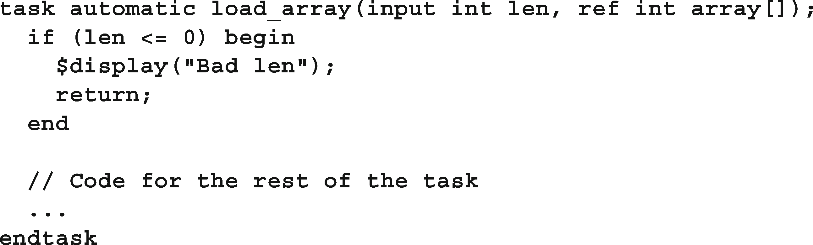
样例3.20中的return语句可以简化函数。
示例3.20在函数中返回
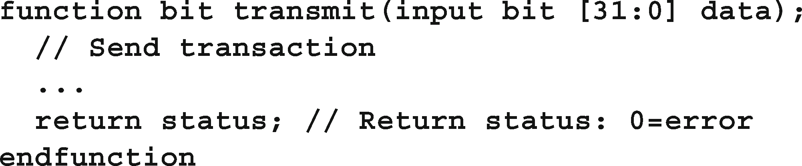
3.5.2 从函数返回一个数组
Verilog例程只能返回一个简单的值，比如位、整数或向量。如果想计算并返回一个数组，没有简单的方法。在System Verilog中，函数可以使用几种技术返回数组。
第一种方法是为数组定义类型，然后在函数声明中使用该类型。样例3.21使用样例2.40中的数组类型，并创建一个函数来初始化数组。
样例3.21从带有类型定义的函数返回数组
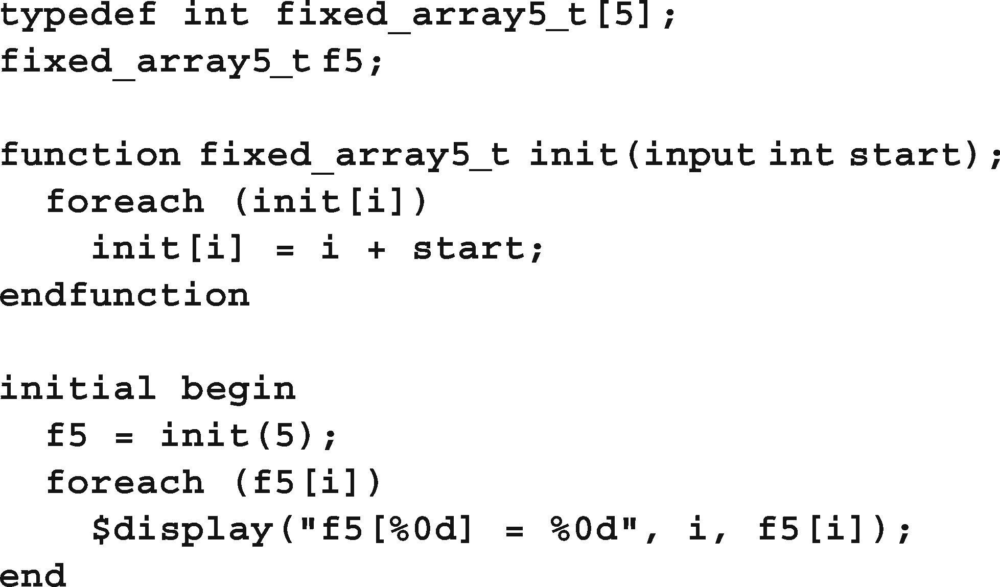
上述代码的一个问题是，函数init创建了一个数组，该数组被复制到数组f5中。如果数组很大，这可能是一个很大的性能问题。
另一种方法是通过引用传递例程。最简单的方法是将数组作为ref参数传递给函数，如示例3.22所示。
样例3.22将数组作为ref参数传递给函数
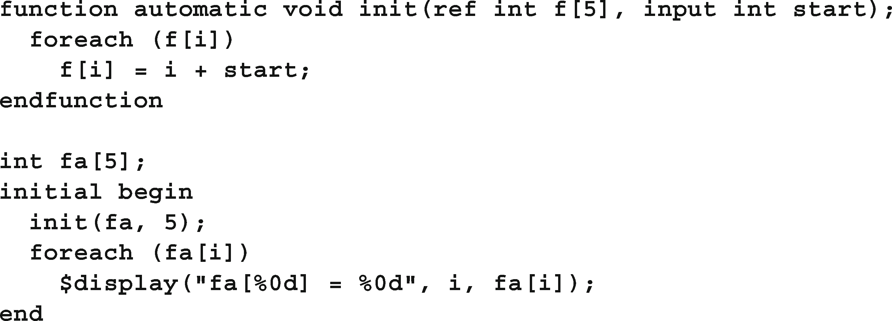
函数返回数组的最后一种方法是将数组包装在类中，并返回对象的句柄。第五章描述了类、对象和句柄。
3.6 本地数据存储
当Verilog在20世纪80年代创建时，它与描述硬件紧密联系在一起。因此，该语言中的所有对象都是静态分配的。特别是，例程参数和局部变量被存储在一个固定的位置，而不是像其他编程语言那样将它们推入堆栈。为什么尝试建模动态代码，如递归例程，当没有办法在硅构建这?然而，那些已经习惯了C等基于堆栈的语言行为的软件工程师，却被这些细微的错误所困扰，因此，他们在创建带有例程库的复杂testbench的能力上受到了限制。
3.6.1 自动存储
在Verilog-1995中，如果您试图从测试台上的多个位置调用任务，那么本地变量将共享公共的静态存储，因此不同的线程会使用彼此的值。在Verilog-2001中，您可以指定任务、函数和模块使用自动存储，这将导致模拟器使用本地变量的堆栈。
在SystemVerilog中，例程默认情况下仍然使用静态存储，包括模块和程序块。通过在程序语句中放入automatic关键字，您应该始终使程序块(及其例程)使用自动存储。在第4章中，您将了解保存testbench代码的程序块。第7.1.6节展示了在创建多个线程时自动存储是如何提供帮助的。
样例3.23展示了一个监视何时将数据写入内存的任务。
例例3.23指定程序块中的自动存储
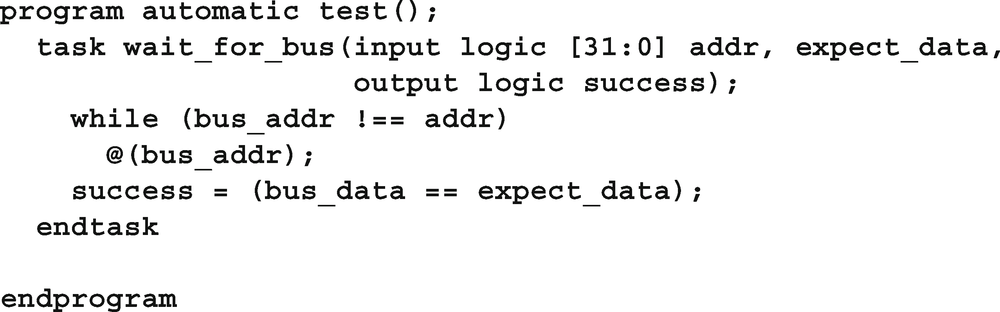
您可以并发地多次调用这个任务，因为addr和expect_data参数分别存储在每个调用中。如果没有自动修饰符，如果第一次调用wait_f or_bus时第二次调用wait_f or_bus仍在等待，那么第二次调用将覆盖这两个参数。
3.6.2 变量初始化
当试图在声明中初始化局部变量时，也会发生类似的问题，因为它实际上是在开始模拟之前初始化的。一般的解决方案是避免在声明变量时将其初始化为常量以外的任何东西。使用单独的赋值语句可以更好地控制何时完成初始化。
样例3.24中的任务在五个周期后查看总线，然后创建一个局部变量并尝试将其初始化为地址总线的当前值。
样例3.24静态初始化错误
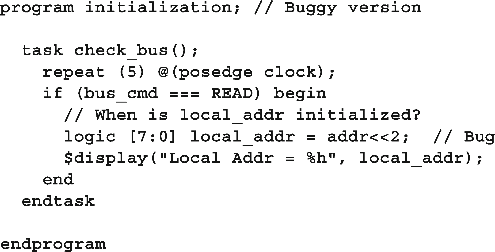
错误在于local_addr变量是静态分配的，所以它实际上是在模拟开始时被ini化的，而不是在进入begin…end块时。同样，解决方案是将程序声明为自动程序，如示例3.25所示。
样例3.25静态初始化修复:使用automatic
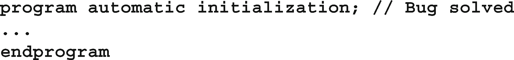
此外，您可以通过从不在声明中初始化变量来避免这一点，但这很难记住，特别是对于C程序员。样例3.26展示了将声明和初始化分开的推荐风格。
样例3.26静态初始化修正:将声明和初始化分开
3.7 时间值
SystemVerilog有几个新构造，允许您明确地指定系统中的时间值。
3.7.1 时间单位和精度
当你依赖' timescale compiler指令时，你必须按照正确的顺序编译文件，以确保所有的延迟使用正确的规模和精度。的一种方法
为了避免这种编译顺序问题，要求每个以“timescale compiler指令”开头的文件都应该以一个将其重置为特定公司默认值的指令结束，比如1ns/1ns。
timeunit和timeprecision声明通过精确指定每个模块的值来消除这种歧义。样例3.27显示了这些声明。注意，如果你使用这些而不是' timescale，你必须把它们放在每个有延迟的模块中。有关这些声明的更多信息，请参阅LRM。
3.7.2 时间的文字
SystemVerilog允许您明确地指定时间值和单位。你的代码可以使用0.1ns或20ps的延迟。记住要使用timeunit和timeprecision或者timescale。通过使用经典的Verilog $timeformat()、$time和$realtime系统任务，您可以让您的代码对时间更加敏感。$timeformat的四个参数是比例因子(纳秒为−9，皮秒为−12)、小数点右侧的数字数、时间值后要打印的字符串和最小字段宽度。
样例3.27显示了各种延迟，以及通过$timeformat()和%t说明符进行格式化时打印时间的结果。
示例3.27时间文字和$timeformat
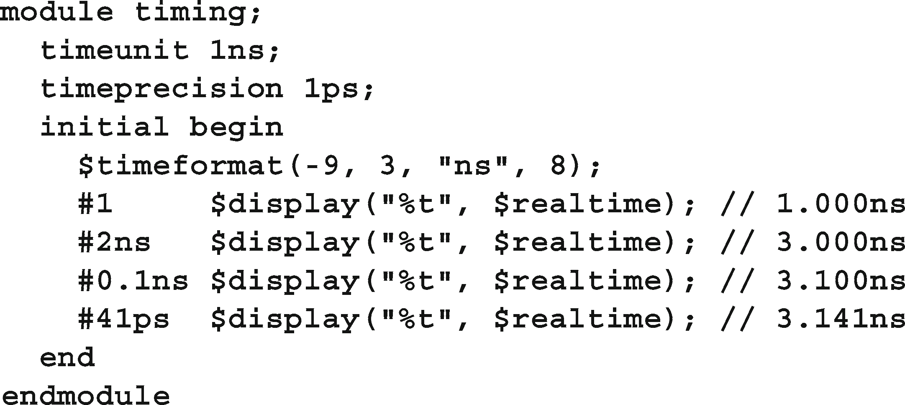
3.7.3 时间和变量
您可以将时间值存储在变量中，并在计算和延迟中使用它们。这些值会根据当前的时间刻度和精度进行缩放和舍入。time类型的变量不能保留分数延迟，因为它们只是64位的整数，所以延迟将被舍入。如果这是一个问题，你应该使用实时变量。
样例3.28显示了当使用实时变量作为延迟时，如何四舍八入。
样本3.28时间变量和舍入
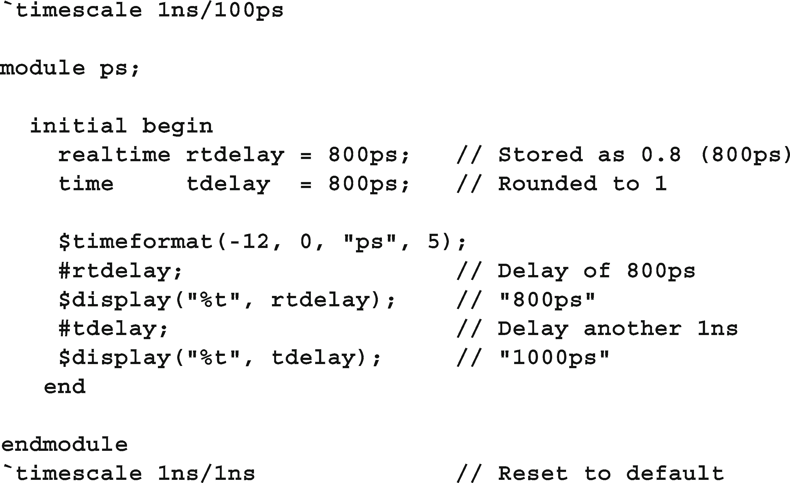
3.7.4 时间与实时美元
系统任务$time返回一个按当前mod的时间单位缩放的整数，但不包含任何小数单位，而$realtime返回一个具有完整时间值的实数，包括分数。为了简洁，本书在示例中使用了$time，但是您的testbench可能需要使用$realtime。
3.8 结论
新的SystemVerilog过程结构和任务/函数特性使该语言看起来更像C/ c++等其他编程语言，从而使您更容易创建testbench。SystemVerilog还有额外的HDL结构，比如定时控制、简单的线程控制和4状态逻辑。
3.9 练习
按照以下要求创建SystemVerilog代码:
创建一个512元素的整数数组
创建一个9位的address变量来索引数组
将数组中的最后一个位置初始化为5
调用一个任务my_task()，并传递数组和地址
创建my_task()，它接受两个输入:通过引用传递的包含512个元素的常量整数数组，以及一个9位地址。该任务调用一个函数print_ int()，并传递按地址索引的数组元素，并预减地址。
创建print_int()，输出模拟时间和输入值。该函数没有返回值。
对于以下SystemVerilog代码，如果任务my_task2（）是自动的，将显示什么？
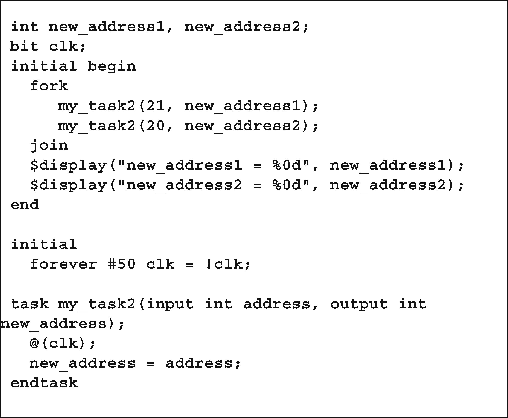
对于练习2中的SystemVerilog代码，如果任务my_ task2()不是自动的，将显示什么?
创建SystemVerilog代码来指定时间应该以ps (picoseconds)格式打印，在小数点右侧显示2位数字，并使用尽可能少的字符
使用练习4中的格式化系统任务，下面的代码显示什么?
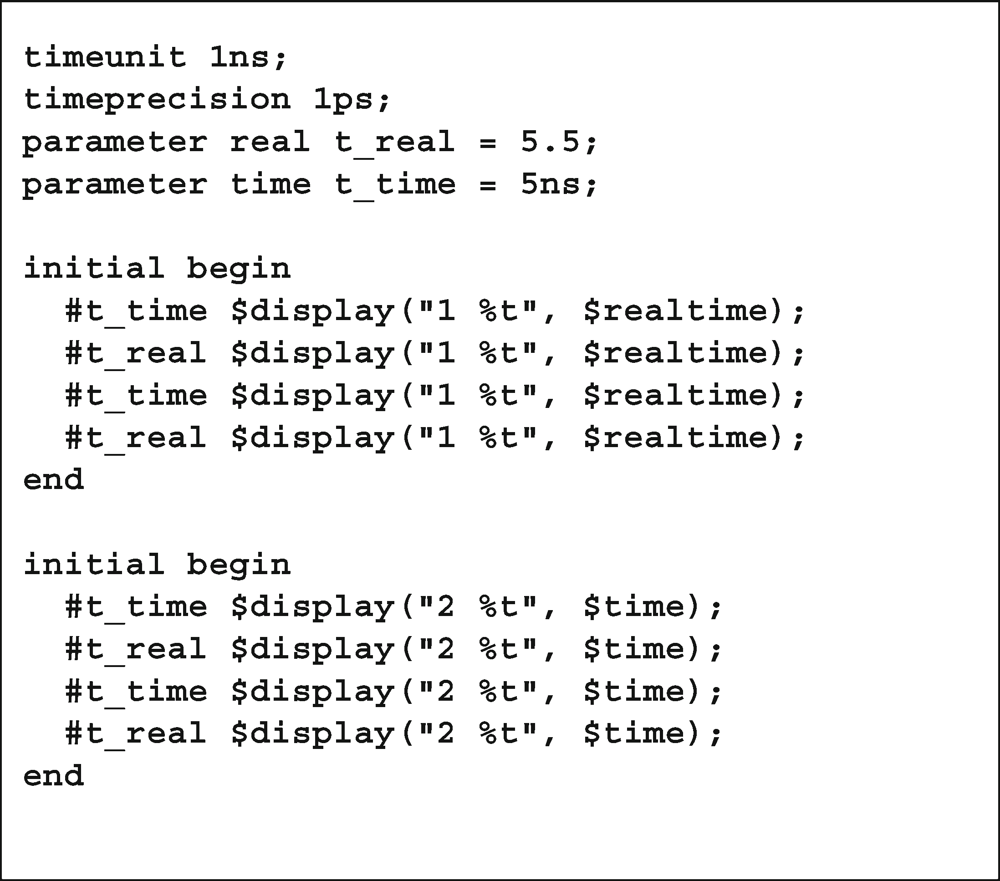